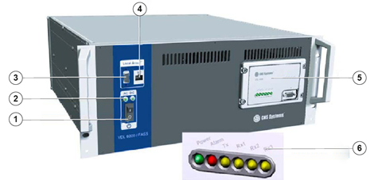
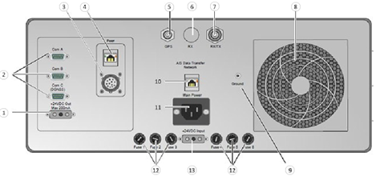
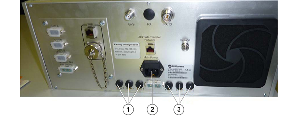

The AIS Base Station receives and monitors
AIS traffic within the VHF coverage of that unit and sends those information to the
operator workstation.
VDL 6000
A "VDL 6000" with combined Rx/Tx VHF antenna interface from CNS SYSTEMS is
used.
The base station includes the following external interfaces (front and back
panel):
- VHF antenna (combined Tx/ Rx)
- VHF antenna (separate Tx and Rx)
- GPS antenna
- AC Power
- DC Power
- Network interface
- Serial interface
Figure 1. AIS Base
Station (Front Panel)

- 1
- On/Off switch
- 2
- AC/DC LEDs
- 3
- Local access/serial Tx/Rx connector
- 4
- Local access/Ethernet
- 5
- Serial connector
- 6
- AIS system LEDs (power/alarm/Tx/Rx1/Rx2/Rx3)
Front panel LEDs:
- AC - The VDL 6000/FASS is powered by an AC power supply
- DC - The VDL 6000/FASS is powered by a DC power supply
- Power - FASS power on
- Alarm - FASS failure
- Tx - VHF transmission in progress
- Rx1 - VHF reception in progress on AIS channel A
- Rx2 - Not used
- Rx3 - VHF reception in progress on AIS channel B
When powering up a VDL 6000 system without any external sensors connected,
the normal behavior of the AIS System LEDs (Power, Alarm, Tx, Rx1, Rx2, Rx3) is:
- The green power LED will flash a couple of times and then light
continuously.
- After approximately two minutes the alarm LED will light up if
there is no external sensor connected.
Figure 2. AIS Base
Station (Backside)

- 1
- DC output
- 2
- Com A/B/C
- 3
- Peer/Souriau UT0
- 4
- Peer/Ethernet
- 5
- GPS connector
- 6
- Rx connector
- 7
- Rx/Tx connector
- 8
- Fan
- 9
- Ground
- 10
- AIS data transfer network
- 11
- Main power
- 12
- Fuses
- 13
- DC input
The VDL 6000/FASS is powered from 240V AC. Both power sources can be
connected and the AC will always be used if present. The inlets do not affect each
other and can be “hot swapped” with the system operating. No power is distributed
out through DC inlet.
There is one circuit breaker on the VDL 6000/FASS, to break AC and DC
power.
The FASS contains a number of fuses (fuse 2.5A time lag-T/slow glass tube,
5 x 20 mm) to protect the individual parts of the system. All fuses are located at
the back panel:
- Two fuses in AC power intake (small hatch above connector)
- Fuse 1 for controller
- Fuse 2 for Ethernet switch, LAN converter and fans
- Fuse 3 - 5V DC, 12V DC internally on power distribution board
(required for DC indicator LED function on front panel)
- Fuse 4 for 24V DC out (DGNSS)
- Fuse 5 for FASS positive supply line
- Fuse 6 for FASS negative supply line
Figure 3. AIS Base
Station (Fuses)

- 1
- Fuses F1 to F3
- 2
- Fuses in AC power intake
- 3
- Fuses F4 to F6